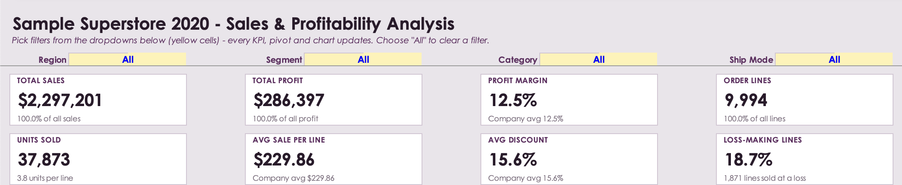
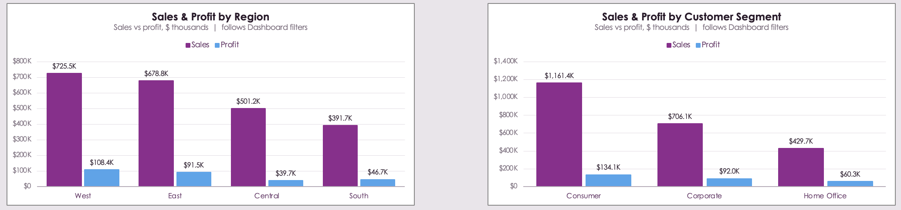
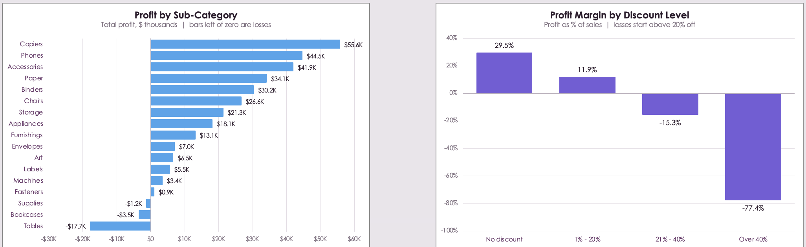
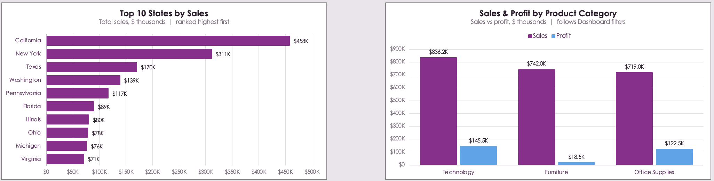

Where does a $2.3m retail business make money, and where does it lose it? An interactive Excel dashboard built from 9,994 order lines.
The business is profitable overall, earning a 12.5% margin on $2.3m of sales, but that headline hides a serious problem. Heavy discounting destroys value: orders discounted by more than 20% lost $135k, which cancelled out almost half of total profit. The same pattern explains the weak Furniture category and the underperforming Central region.
Capping discounts at 20% and repricing a small number of loss-making product lines would be the fastest route to higher margins.
Click any screenshot to enlarge it.




Orders with no discount earned a 29.5% margin. Orders discounted by more than 20% made a combined loss of -$135.4k on $362.8k of sales (a -37.3% margin).
| Discount level | Profit margin |
|---|---|
| No discount | 29.5% |
| 1% – 20% | 11.9% |
| 21% – 40% | -15.3% |
| Over 40% | -77.4% |
Technology ($145.5k profit, 17.4% margin) and Office Supplies ($122.5k, 17.0%) earned almost all of the profit. Furniture generated $742.0k of sales but only $18.5k of profit (a 2.5% margin), dragged down by Tables (-$17.7k) and Bookcases (-$3.5k).
The West led on both sales ($725.5k) and margin (14.9%). Central earned only a 7.9% margin on $501.2k of sales, about half the West's. Central's average discount was 24.0%, compared with 10.9% in the West.
Just three of seventeen sub-categories (Copiers, Phones and Accessories) generated 49.6% of total profit. Texas was the third-largest state by sales but lost -$25.7k, the most of any state.
dSales, dProfit, dRegion…) so every
formula reads clearly.
"*", so one formula
works whether a filter is on or off.
=IF(Dashboard!C5="All","*",Dashboard!C5)SUMIFS and COUNTIFS with all four filters applied, so the
tables recalculate instantly without refreshing.
=SUMIFS(dSales, dRegion,$C$5, dSegment,$C$6, dCat,$C$7, dShip,$C$8, dRegion,B13)INDEX,
MATCH and LARGE, using a small tie-breaker so states with
equal values still rank uniquely when filters are applied.
$#,##0.0,"K"), a consistent colour for sales and profit across
every chart, and descriptive titles and data labels.
The biggest lesson was that sales and profit can pull in opposite directions: the business's largest revenue lines were not always its most profitable, and its discounting policy was quietly destroying value. Building the dashboard with formulas rather than standard PivotTables also taught me how to design models that recalculate reliably and stay transparent to whoever uses them next.
Next, I would add order dates to analyse seasonality, and model the profit impact of different discount caps.
Download the Excel file to try the filters and inspect the formulas.